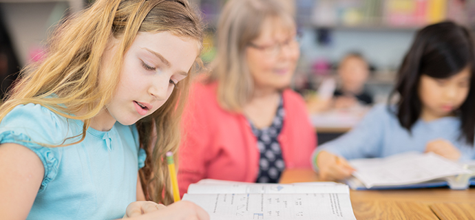

<? include ("../inc/header.html"); ?>


	<div id="container">
		<div class="top_c">
			<div class="topImg topImg8">
				<dl>
					<dt>몰입과정</dt>
					<dd>유아기부터 시작되는 영어 몰입교육으로<span>이중언어를 구사하는 최상위 엘리트 양성 과정입니다.</span></dd>
				</dl>
			</div>
			<div class="subm">
				<ul class="s_depth1">
					<li><a href="../main/main.html"></a></li>
					<li><a href="javascript:;" class="on"><span>커리큘럼</span></a>
						<ul class="s_depth2">
							<li><a href="../intro/intro.html">SLP소개</a></li>
							<li><a href="../culum/culum_intro.html">커리큘럼</a></li>
							<li><a href="../admission/admission.html">입학안내</a></li>
							<li><a href="../news/notice.html">SLP소식</a></li>
						</ul>
					</li>
					<li><a href="javascript:;" class="on"><span>몰입과정</span></a>
						<ul class="s_depth2">
							<li><a href="infusion.html">Infusion Learning<sup>Ⓡ</sup></a></li>
							<li><a href="culum_intro.html">커리큘럼 로드맵</a></li>
							<li><a href="concentration_aj.html">집중과정</a></li>
							<li><a href="Immersion_rb.html">몰입과정</a></li>
							<li><a href="junior_jip.html">주니어과정</a></li>
							<li><a href="alps_intro.html">온라인학습</a></li>
						</ul>					
					</li>
				</ul>
			</div>		
		</div>
		<div class="group proc_box">
			<div class="contents">
				<div class="proc_list">
					<ul>
						<li class="coy coy2">
							<a href="Immersion_rb.html">
								<h5>유치부 몰입 프로그램</h5>
								<dl>
									<dt>RB</dt>
									<dd>Rainbow Bridge</dd>
								</dl>
							</a>
						</li>
						<li class="cob cob2">
							<a href="Immersion_sap.html">
								<h5>유치부 졸업자 프로그램</h5>
								<dl>
									<dt>SAP</dt>
									<dd>Specialized Academic<span>Program</span></dd>
								</dl>
							</a>
						</li>
						<li class="cog cog2 on">
							<a href="Immersion_asn.html">
								<h5>초등고학년 엘리트 과정</h5>
								<dl>
									<dt>ASN</dt>
									<dd>Alpha, Sigma, Nu</dd>
								</dl>
							</a>
						</li>
					</ul>
					<p>유치부 몰입 과정을 이수한 학생들을 대상으로 <span><strong class="co1">창의적, 비판적 사고력과 자유로운 의사 표현</strong>은 물론 </span><strong class="co1">전략적 학습 능력</strong>까지 갖추도록 교육하는 <span><strong>특별 심화 과정</strong></span></p>				
				</div>
			</div>
		</div>
		<div class="group proc_box2 imm_box2">
			<div class="contents mdb1002">
				<div class="proc_list3">
					<div class="con_list con_list2">
						<ul>
							<li>
								
								<dl>
									<dt class="com_tit">글로벌 인재 역량 강화</dt>
									<dd class="com_txt2"><span><strong class="co1">미국 중학교 공교육 커리큘럼</strong>을바탕으로 한</span> 전문화된 <strong class="co1">디베이트와</strong> <strong class="co1">프레젠테이션 과목</strong>을 통해 <span>글로벌 인재로서의 역량 강화</span></dd>
								</dl>
							</li>
							<li>
								
								<dl>
									<dt class="com_tit">분석력, 비판적 사고력 강화</dt>
									<dd class="com_txt2"><span><strong class="co1">자료 조사 → 분석 및 종합 → 독창적의견 발표 →</strong></span> <strong class="co1">상대방 의견 요약 및 반박 → 설득의 훈련</strong>을 통해 <span>종합적 분석력, 비판적 사고력 강화</span></dd>
								</dl>
							</li>
							<li>
								
								<dl>
									<dt class="com_tit">전략적 학습 병행</dt>
									<dd class="com_txt2"><strong class="co1">독해, 작문, 문법, 토플</strong> 등<span>최상위 엘리트를 위한</span>다양한 전략적 학습 병행</dd>
								</dl>
							</li>
						</ul>
					</div>
				</div>
			</div>
		</div>
	</div>


<? include ("../inc/footer.html"); ?>